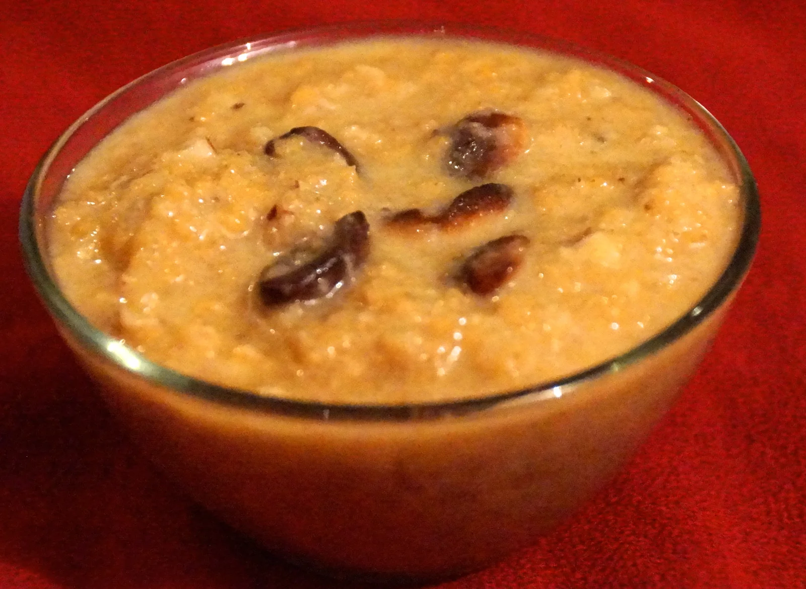

SWEET DISHES with Millet Zone
'Siri Dhanya' millet
Browntop millet payasam /porridge
INGREDIENTS :
- Half cup of Browntop millet
- 3/4th cup of crushed Jaggery
- Half a cup of boiled & Cooled Milk
- Half a tablespoon of Ghee
- Cashews - 1 tableb spoon broken and roasted
- Elachi powder- 1 teaspoon
Method:
- In a teaspoon of ghee, dry-roast the Browntop millet till nice aroma comes and the color changes to slight brown.
- Now add enough water and let it cook till it turns soft. While the 'Siri Dhanya' cooks properly, separately fry the cashews in half teaspoon of ghee and put aside.
- Add one cup of powdered jaggery into a mixing bowl. Add enough water to it. Mix well. Strain to remove the impurities.
- Heat it up to a medium flame and boil for 5mins until its slightly thick. In low flame, add cooked 'Siri Dhanya' and stir well to avoid lumps. Cook for 5 minutes. Keep stirring. Now add elaichi and Ghee.
- Add half cup of milk and keep stirring continuously. Once it is mixed well together, add the cashews give a quick mix and serve.
NOTE: This can be made with Foxtail millet, Barnyard, Kodo and Little millet too.
Millet laddu
INGREDIENTS :
- Foxtail millet- 3 tablespoons
- Pearl millet- 3 tablespoons
- Finger millet- 3 tablespoons
- Barnyard millet- 3 tablespoons
- Kodo millet- 3 tablespoons
- Little millet- 3 tablespoons
- Moong dal- 2 tablespoons
- Barley- 1 tablespoons
- Grated jaggery- 1 cup
- Cardamom seeds- 4
- Melted Ghee- 6 tablespoons
Method:
- In a wide kadai, take all millets, moong dal, barley and cardamom seeds. Roast it in a medium flame until a nice roasted aroma. Roasting takes 10-15 minutes. Make sure they dont burn.
- Allow it to cool. Meanwhile, grated the jaggery and melt the ghee & roast the cashews.Now grind the roasted millets to a fine powder.Sieve if necessary.
- After its ground smooth,add the grated jaggery and again grind it to a fine powder.Check for sweetness.Add more jaggery if u need.
- Now take the ground mixture in a wide bowl.Make a dent in the center.Add the melted ghee and roasted cashews.Mix well with the ladle as the ghee is hot.
- Once the mixture is warm,mix well with ur hands and make balls.Add more ghee if needed OR u can also add few drops of milk or water if u want to reduce the quantity of ghee.But the shelf life of laddu will be reduced if u add milk.So use it accordingly.
- Make all ladoos and store in an air tight box.Enjoy.It stays good for weeks.
NOTE: This can be made with Foxtail millet, Barnyard, Kodo and Little millet too.
KHEER with FOXTAIL MILLET
INGREDIENTS :
- 1 liter milk
- 50 grams foxtail millet
- 4 to 5 saffron strands (optional)
- 1/4 cup of freshly grated coconut
- 1/4 cup organic jaggery powder
- 1/ 4 cup mixed dry fruits
Method:
- Add the milk into a pan keep it on medium flame.
- Soak the 'SiriDhanya' for 30 minutes. And then, wash the foxtail millet and drain extra water. Remember not to squeeze the grain.
- As the milk boils, add the washed foxtail millet and saffron strands to the milk and let the milk come to a quick boil.
- Then, turn the heat to low and simmer the kheer until the foxtail millet cooks well. This will take about 15 minutes. (Check with spoon)
- When it is cooked well, add in the freshly grated coconut and organic jaggery powder and simmer for another 10 -15 minutes, stirring occationally so the milk does not condense and settle to the bottom. Check the sweetness as personal prefernce.
- Turn off the heat and the kheer is now ready to be served.
- Garnish the Foxtail Millet Kheer with mixed dry fruits.
NOTE: This can be made with Browntop, Barnyard, Kodo and Little millet too.
Source: Original Millets Zone · Millet sweets
Content captured 25 October 2026. Reorganized for reading; purchase-related material excluded.
Content captured 25 October 2026. Reorganized for reading; purchase-related material excluded.